Es geht darum, den Innovationsprozess zu öffnen und frische Ideen und Perspektiven aus unterschiedlichen Quellen zu nutzen, um Innovation zu beschleunigen und die eigene Wettbewerbsfähigkeit zu steigern.
Dieses Kartenset wurde entwickelt, um dabei zu helfen, diese zukunftsweisende Philosophie der Ko-Kreation in eure Arbeitskultur zu integrieren. Ganz gleich, ob es um die Entwicklung neuer Geschäftsideen, die Planung langfristiger Strategien oder die Suche nach kreativen Lösungen für bestehende Herausforderungen geht, dieses Toolkit bietet das nötige Werkzeug
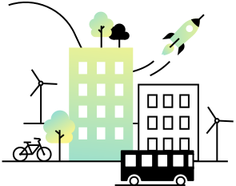
Anleitung
Das Kartenset ist eine Sammlung von Methoden, um Workshops und Meetings effektiver zu gestalten, innovative Projekte voranzutreiben und die Kommunikation und Zusammenarbeit in Teams zu fördern.
Die übergeordnete Kategorie Open Innovation bildet den Rahmen. Sie gibt eine Einführung in die Thematik und Anleitungen für eine offene Innovationskultur.
Unter Crowdsourcing sind Methoden zusammengefasst, die dabei helfen, ein Problem aus verschiedenen Blickwinkeln zu betrachten und tiefere Erkenntnisse zu gewinnen.
Die Kategorie Zukunft hilft, dabei langfristige Strategien zu entwickeln und auf Veränderungen vorbereitet zu sein.
Die Ideation ist das Herzstück des Innovationsprozesses. Hier werden kreative Ideen generiert und innovative Lösungen entwickelt, die dann mit Methoden aus der Kategorie Konzept & Validation weiter ausgearbeitet und in Form von Low-Fidelity-Prototypen getestet werden.
Workshop
Vorbereitung
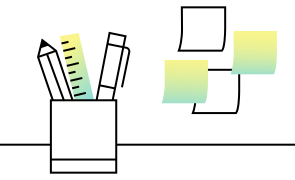
Ein produktiver und effizienter Workshop braucht eine ebenso gute Vorbereitung. Plant den Ablauf des Workshops so detailliert wie möglich.
Workshop
Durchführung
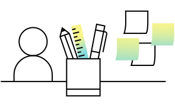
Voraussetzungen für das Gelingen sind ein respektvoller Umgang, keine Nutzung von Laptops/Handys außerhalb der Pausen und die Beachtung des Timers am Ende der Arbeitsphasen.
Team Rollen
Zusammenarbeit optimieren & Konflikte vermeiden. Identifiziert und verteilt gemeinsam Rollen und Verantwortlichkeiten im Team.
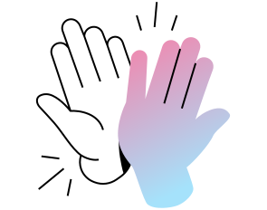
Zu Beginn von Meetings, um alle einzubeziehen (Check-in)
Am Ende von Sitzungen, um Feedback zu sammeln und zu reflektieren (Check-out)
Zu Beginn jeder kreativen und aktiven Arbeitsphase (Brainwriting etc.), um das Team zu aktivieren und eine motivierende Atmosphäre zu schaffen (Warm-up)
Impromptu
Networking
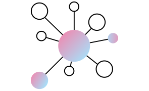
Beziehungen aufbauen und Erwartungen teilen. Schafft gleich zu Beginn einer Arbeitssession eine produktive Form der Zusammenarbeit.
Check-in &
Check-out
Beziehungen im Team aufbauen.
Fördert eine offene Kommunikation & Verständnis unter den Teammitglieder:innen, durch einen klaren Rahmen für Meetings.
Kennenlernen
Aufstellung
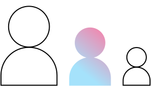
In der Runde und im Raum ankommen.Lernt Euch kennen und lockert die Atmosphäre durch einfache, kurze Übungen auf.
Stop & Go Warm-up
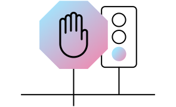
Einfach und unterhaltsam.Tankt Energie und startet nach einer Pause mit Bewegung und Spaß wieder durch.
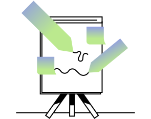
Ihr steht vor einer Herausforderung
Benötigt einen Blick von außen
Wollt bestehende Annahmen in Frage stellen
Bedürfnisse und Sichtweisen verschiedener Stakeholder:innen verstehen
Troika Consulting
Schnelle Beratung in Dreierteams.
Erhaltet und gebt reihum praktische und einfallsreiche Tipps. Öffnet Euch für Impulse von außen.
Community Mapping
Visualisierung von Netzwerken.
Identifiziert gemeinsame Interessen, Probleme oder Veränderungen und gibt einen Überblick der Gemeinschaft.
Open Space
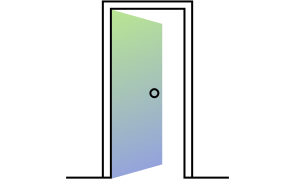
Offen und selbstorganisiert.
Diskutiert in offenen Runden Themen, die Euch aktuell beschäftigen, um neue Perspektiven zu gewinnen.
User Interview
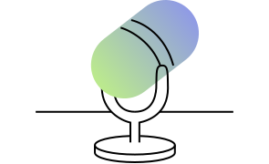
Wertvolles Feedback.
Sammelt in relativ kurzer Zeit tiefe Einblicke in die Bedürfnisse und das Verhalten von User:innen oder Feedback zu eurem Konzept.
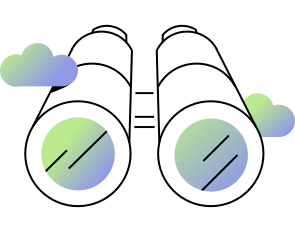
Ihr müsst strategische Entscheidungen treffen
Wollt Euch auf Veränderungen vorbereiten
Langfristige Ziele und Visionen entwickeln
Möchtet die Auswirkungen Eurer Innovationen verstehen
Impact Mapping
Visualisierung von Zielen & Auswirkungen. Schafft ein besseres Verständnis der Auswirkungen von Trends und der strategischen Ausrichtung von Projekten.
STEEP Analyse
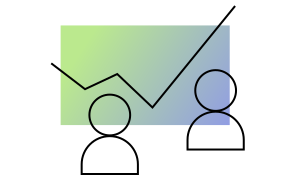
Relevante Trends erkennen.
Mit dieser Umfeldanalyse lassen sich externe Einflüsse und Trends beleuchten.
Scenario Building
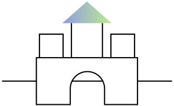
Zukünfte greifbar machen.
Entwickelt alternative Zukunftsszenarien und bereitet Euch proaktiv auf verschiedene Möglichkeiten vor.
Pre Mortem
Kritisch hinterfragen.
Identifiziert mögliche interne und externe Herausforderungen früh genug, um reagieren zu können.
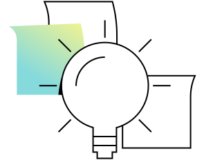
Ihr sucht nach neuen Ideen, um ein bestehende Herausforderung zu lösen oder neue Chancen zu nutzen
Möchtet dabei verschiedene Perspektiven einnehmen
Möchtet die Kreativität und das Potenzial Eures Teams fördern
Wie Können Wir - Fragen
Wechselt in einen präzisen Definitionsmodus. Die Umformulierung einer Herausforderung in eine Frage mit der Einleitung Wie können wir (WKW) aktiviert konstruktives und lösungsorientiertes Denken.
Walt Disney
Entwickelt Ideen durch Perspektivwechsel (weiter). Nehmt dabei die verschiedenen Rollen der Träumer:in, Realist:in und Kritiker:in ein, um einen ganzheitlichen Lösungsansatz zu kreieren.
Brainwriting
Schaltet in einen kreativen Lösungsmodus. Kreiert schnell und kollaborativ Ideen, indem Ihr Euch gegenseitig inspiriert und Gedanken aufeinander aufbauen lasst. Hier ist alles möglich!
Upside Down
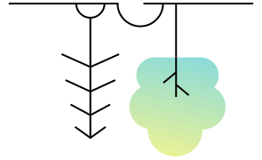
Neue Perspektiven einnehmen.
Stellt Euch auf den Kopf und durchbrecht konventionelle Denkmuster, um innovative Lösungen zu generieren.
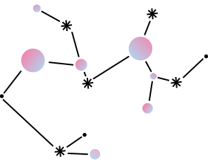
Ihr möchtet die Ideen in handfeste Konzepte umwandeln und testen
Sicherstellen, dass die Ideen praktikabel sind und den Bedürfnissen der Zielgruppe entsprechen
Ein Minimal Viable Product (MVP) vorbereiten
WowHowNowCiao Matrix
Priorisierung der Ideen.
Diese Matrix erleichtert die Auswahl bei einer großen Anzahl von Ideen. Sie trifft keine absolute Aussage über die Qualität einer Idee, hilft aber bei der Kategorisierung.
Storyboard
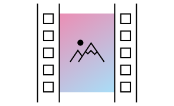
Visualisierung von Ideen.
Stellt Konzeptideen als kurze Geschichte dar für ein besseres Verständnis und klare Kommunikation.
Rapid Prototyping
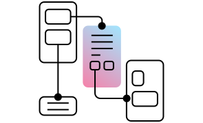
It‘s time for action!
Macht eure Ideen durch einfache Formen der Visualisierung greifbar. Entdeckt dabei durch frühes Testen die Stärken und Schwächen des Konzepts.
Test & Feedback
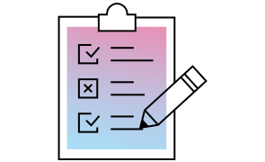
Frühes und kontinuierliches Feedback ist der Schlüssel zum Erfolg. Testet Euer Konzept immer wieder aufs Neue und stellt so eine zielgerichtete Entwicklung sicher.
MoSCoW Matrix
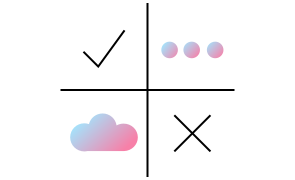
Bildet die Basis für Projektentscheidungen, Zuschnitt eines Minimal Viable Products (MVPs) oder Planung einer Projekt Roadmap. Strukturiert und priorisiert mithilfe der Matrix Ziele, Anforderungen und Aufgaben nach Must, Should, Could & Won‘t.
Troika Consulting: Henri Lipmanowicz, Keith McCandless: The Surprising Power of Liberating Structures: Simple Rules to Unleash a Culture of Innovation, Liberating Structures Press, Oktober 2014.
Zum Thema Community Mapping vgl. Design Thinking Methode von Larry Leifer (Direktor des Hasso Plattner Design Thinking Programms der Universität Stanford), Terry Winograd (ebenfalls Mitbegründer des Hasso Plattner Instituts in Stanford) und David Kelley (Gründer der Agentur IDEO).
Impromptu Networking: Henri Lipmanowicz, Keith McCandless: The Surprising Power of Liberating Structures: Simple Rules to Unleash a Culture of Innovation, Liberating Structures Press, Oktober 2014.
Impact Mapping: Gojko Adžić: Impact Mapping: Making a Big Impact with Software Products and Projects, Provoking Thoughts, April 2009.
STEEP Analyse: Benedikt Groß und Eileen Mandir: Zukünfte gestalten: Spekulation. Kritik. Innovation. Mit »Design Futuring« Zukunftsszenarien strategisch erkunden, entwerfen und verhandeln. verlag hermann schmidt, September 2022.
Open Space: Harrison Owen, Maren Klostermann, Sabine Burkhardt: Open Space Technology – Ein Leitfaden für die Praxis. Klett-Cotta, Stuttgart 2001.
Zum Thema WKW Fragen vgl. Design Thinking Methode von Larry Leifer (Direktor des Hasso Plattner Design Thinking Programms der Universität Stanford), Terry Winograd (ebenfalls Mitbegründer des Hasso Plattner Instituts in Stanford) und David Kelley (Gründer der Agentur IDEO).
Walt Disney Methode: Robert B. Dilts, Todd Epstein, Robert W. Dilts: Know-how für Träumer: Strategien der Kreativität, NLP & modelling, Struktur der Innovation. Junfermann Verlag, Paderborn 1994.umfassendes Nachschlagewerk zu Rapid Prototyping: Prof. Dr. Andreas Gebhardt: Generative Fertigungsverfahren, Carl Hanser Verlag GmbH & Co. KG, Oktober 2013.
Zum Thema WOWHOWNOWCIAO vgl. Design Thinking Methode von Larry Leifer (Direktor des Hasso Plattner Design Thinking Programms der Universität Stanford), Terry Winograd (ebenfalls Mitbegründer des Hasso Plattner Instituts in Stanford) und David Kelley (Gründer der Agentur IDEO).
MosCoW Methode: D. Clegg, R. Barker: CASE Method Fast-Track: A Rad Approach, Addison-Wesley Longman Publishing Co., Inc., Boston 1994.
Das Kartenset ist eine Sammlung von Methoden, um Workshops und Meetings effektiver zu gestalten, innovative Projekte voranzutreiben und die Kommunikation und Zusammenarbeit in Teams zu fördern. Es ist eines von mehreren anwendungsorientierten Ergebnissen des Projekts Open Innovation City und wurde vom Land Nordrhein-Westfalen gefördert.